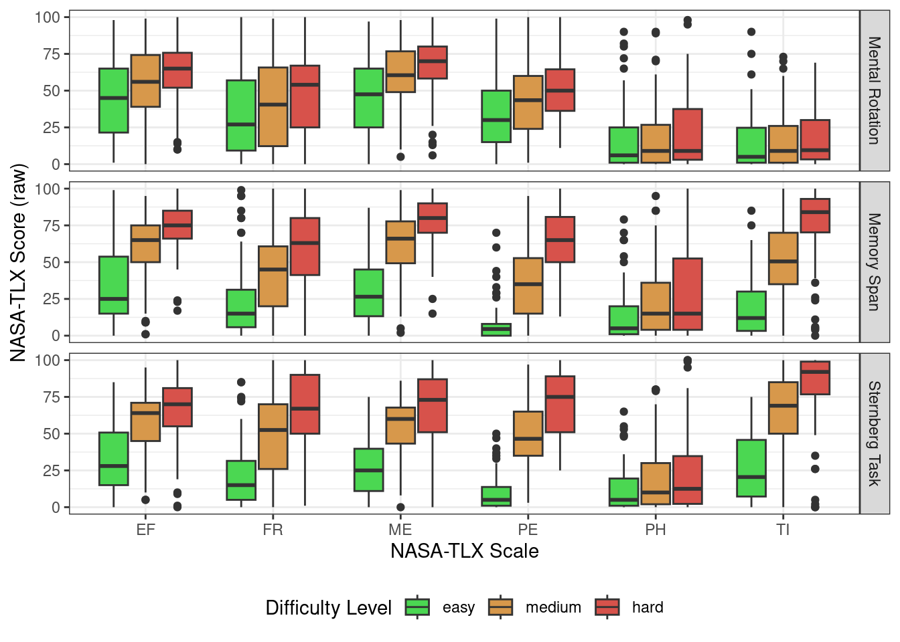
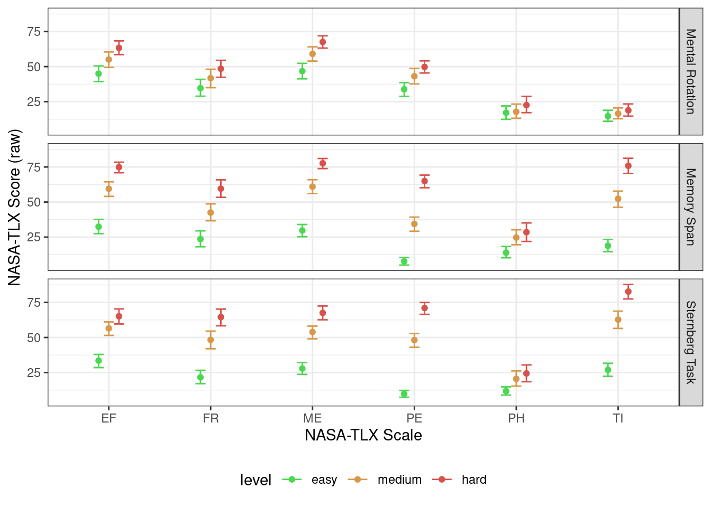

knitr::opts_chunk$set(error = TRUE)First banch. Analysis workflow
Packages
library(tidyverse)── Attaching core tidyverse packages ──────────────────────── tidyverse 2.0.0 ──
✔ dplyr 1.1.2 ✔ readr 2.1.4
✔ forcats 1.0.0 ✔ stringr 1.5.0
✔ ggplot2 3.4.2 ✔ tibble 3.2.1
✔ lubridate 1.9.2 ✔ tidyr 1.3.0
✔ purrr 1.0.1
── Conflicts ────────────────────────────────────────── tidyverse_conflicts() ──
✖ dplyr::filter() masks stats::filter()
✖ dplyr::lag() masks stats::lag()
ℹ Use the conflicted package (<http://conflicted.r-lib.org/>) to force all conflicts to become errorstheme_set(theme_bw()) # set black and white theme
library(lme4)Loading required package: Matrix
Attaching package: 'Matrix'
The following objects are masked from 'package:tidyr':
expand, pack, unpacklibrary(lmerTest)
Attaching package: 'lmerTest'
The following object is masked from 'package:lme4':
lmer
The following object is masked from 'package:stats':
steplibrary(MuMIn)
library(pwr)
library(ez)rm(list = ls())Reading data
MR_data <- read_csv("../preproc-data/MR_pav_data.csv")Rows: 3936 Columns: 8
── Column specification ────────────────────────────────────────────────────────
Delimiter: ","
chr (5): correctAns, key, task, level, id
dbl (3): is_correct, rt, trial
ℹ Use `spec()` to retrieve the full column specification for this data.
ℹ Specify the column types or set `show_col_types = FALSE` to quiet this message.ST_data <- read_csv("../preproc-data/ST_pav_data.csv")Rows: 3936 Columns: 8
── Column specification ────────────────────────────────────────────────────────
Delimiter: ","
chr (4): key, task, level, id
dbl (4): target_present, is_correct, rt, trial
ℹ Use `spec()` to retrieve the full column specification for this data.
ℹ Specify the column types or set `show_col_types = FALSE` to quiet this message.MS_data <- read_csv("../preproc-data/MS_pav_data.csv")Rows: 3936 Columns: 7
── Column specification ────────────────────────────────────────────────────────
Delimiter: ","
chr (3): task, level, id
dbl (4): trials, n, rt, acc
ℹ Use `spec()` to retrieve the full column specification for this data.
ℹ Specify the column types or set `show_col_types = FALSE` to quiet this message.NASATLX_data <- read_csv("../preproc-data/NASATLX_pav_data.csv")Rows: 4428 Columns: 5
── Column specification ────────────────────────────────────────────────────────
Delimiter: ","
chr (4): task, level, id, scale
dbl (1): score
ℹ Use `spec()` to retrieve the full column specification for this data.
ℹ Specify the column types or set `show_col_types = FALSE` to quiet this message.SEQUENCE_data <- read_csv("../preproc-data/SEQ_pav_data.csv")Rows: 738 Columns: 4
── Column specification ────────────────────────────────────────────────────────
Delimiter: ","
chr (3): level, task, id
dbl (1): order
ℹ Use `spec()` to retrieve the full column specification for this data.
ℹ Specify the column types or set `show_col_types = FALSE` to quiet this message.Behavioral data
Remove outliers & Aggregate
is_outlier <- function(x) ifelse(x > quantile(x, .25, na.rm = TRUE) - 1.5 * IQR(x, na.rm = TRUE) &
x < quantile(x, .75, na.rm = TRUE) + 1.5 * IQR(x, na.rm = TRUE),
FALSE, TRUE)Mental Rotation
MR_data |>
group_by(id, level, task) |>
mutate(is_outlier = is_outlier(rt)) |>
filter(!is_outlier) |>
summarise(rt = mean(rt),
acc = mean(is_correct)) -> MR_data_agg`summarise()` has grouped output by 'id', 'level'. You can override using the
`.groups` argument.MR_data_agg |> write_csv("../preproc-data/MR_pav_data_agg.csv")Memory Span
MS_data |>
group_by(id, level, task) |>
mutate(is_outlier = is_outlier(rt)) |>
mutate(is_outlier = ifelse(is.na(is_outlier), FALSE, is_outlier)) |>
filter(!is_outlier) |>
summarise(rt = mean(rt),
acc = mean(acc)) -> MS_data_agg`summarise()` has grouped output by 'id', 'level'. You can override using the
`.groups` argument.MS_data_agg |> write_csv("../preproc-data/MS_pav_data_agg.csv")Sternberg Task
ST_data |>
group_by(id, level, task) |>
mutate(is_outlier = is_outlier(rt)) |>
filter(!is_outlier) |>
summarise(rt = mean(rt),
acc = mean(is_correct)) -> ST_data_agg`summarise()` has grouped output by 'id', 'level'. You can override using the
`.groups` argument.ST_data_agg |> write_csv("../preproc-data/ST_pav_data_agg.csv")Plot all paradigms
MR_data_agg |>
bind_rows(MS_data_agg, ST_data_agg) |>
mutate(level = factor(level,
ordered = TRUE,
levels = c("easy", "medium", "hard"))) |>
ggplot(aes(level, rt)) +
facet_wrap(~ task, scales = "free_y",
labeller = labeller(task = c(MR = "Mental Rotation",
MS = "Memory Span",
ST = "Sternberg Task"))) +
stat_summary(fun.data = mean_cl_boot, geom = "pointrange") +
labs(x = "Difficulty Level", y = "Reaction time, s")
MR_data_agg |>
bind_rows(MS_data_agg, ST_data_agg) |>
mutate(level = factor(level,
ordered = TRUE,
levels = c("easy", "medium", "hard"))) |>
ggplot(aes(level, acc)) +
facet_wrap(~ task, scales = "free_y",
labeller = labeller(task = c(MR = "Mental Rotation",
MS = "Memory Span",
ST = "Sternberg Task"))) +
stat_summary(fun.data = mean_cl_boot, geom = "pointrange") +
labs(x = "Difficulty Level", y = "Accuracy")
Desriptives
Mental Rotation
MR_data_agg |>
group_by(level, task) |>
summarise(n = unique(id) |> length(),
mean = mean(rt),
median = median(rt),
sd = sd(rt),
min = min(rt),
max = max(rt),
CI_lower = mean - 1.96 * sd / sqrt(n),
CI_upper = mean + 1.96 * sd / sqrt(n)) |>
# mutate_all(.funs = function(x) if (is.double(x)) return(round(x, 2)) else return(x)) |>
knitr::kable(caption = "Mental Rotation. Reaction Time", digits = 2)`summarise()` has grouped output by 'level'. You can override using the
`.groups` argument.| level | task | n | mean | median | sd | min | max | CI_lower | CI_upper |
|---|---|---|---|---|---|---|---|---|---|
| easy | MR | 82 | 6.48 | 5.41 | 4.03 | 1.17 | 25.47 | 5.61 | 7.35 |
| hard | MR | 82 | 10.85 | 8.43 | 8.02 | 0.50 | 44.55 | 9.11 | 12.59 |
| medium | MR | 82 | 8.22 | 7.02 | 5.51 | 0.31 | 33.12 | 7.02 | 9.41 |
MR_data_agg |>
group_by(level, task) |>
summarise(n = unique(id) |> length(),
mean = mean(acc),
sd = sd(acc),
min = min(acc),
max = max(acc),
CI_lower = mean - 1.96 * sd / sqrt(n),
CI_upper = mean + 1.96 * sd / sqrt(n)) |>
# mutate_all(.funs = function(x) if (is.double(x)) return(round(x, 3)) else return(x)) |>
knitr::kable(caption = "Mental Rotation. Accuracy", digits = 3)`summarise()` has grouped output by 'level'. You can override using the
`.groups` argument.| level | task | n | mean | sd | min | max | CI_lower | CI_upper |
|---|---|---|---|---|---|---|---|---|
| easy | MR | 82 | 0.849 | 0.169 | 0.286 | 1 | 0.813 | 0.886 |
| hard | MR | 82 | 0.720 | 0.183 | 0.333 | 1 | 0.680 | 0.759 |
| medium | MR | 82 | 0.750 | 0.180 | 0.250 | 1 | 0.711 | 0.789 |
Memory Span
MS_data_agg |>
group_by(level, task) |>
summarise(n = unique(id) |> length(),
mean = mean(rt, na.rm = TRUE),
median = median(rt, na.rm = TRUE),
sd = sd(rt, na.rm = TRUE),
min = min(rt, na.rm = TRUE),
max = max(rt, na.rm = TRUE),
CI_lower = mean - 1.96 * sd / sqrt(n),
CI_upper = mean + 1.96 * sd / sqrt(n)) |>
# mutate_all(.funs = function(x) if (is.double(x)) return(round(x, 2)) else return(x)) |>
knitr::kable(caption = "Memory Span. Reaction Time", digits = 2)`summarise()` has grouped output by 'level'. You can override using the
`.groups` argument.| level | task | n | mean | median | sd | min | max | CI_lower | CI_upper |
|---|---|---|---|---|---|---|---|---|---|
| easy | MS | 82 | 10.50 | 10.03 | 2.78 | 5.47 | 23.47 | 9.90 | 11.10 |
| hard | MS | 82 | 20.59 | 19.92 | 5.91 | 11.24 | 39.57 | 19.31 | 21.87 |
| medium | MS | 82 | 17.83 | 16.83 | 4.68 | 9.47 | 32.31 | 16.82 | 18.85 |
MS_data_agg |>
group_by(level, task) |>
summarise(n = unique(id) |> length(),
mean = mean(acc),
sd = sd(acc),
min = min(acc),
max = max(acc),
CI_lower = mean - 1.96 * sd / sqrt(n),
CI_upper = mean + 1.96 * sd / sqrt(n)) |>
knitr::kable(caption = "Memory Span. Accuracy", digits = 3)`summarise()` has grouped output by 'level'. You can override using the
`.groups` argument.| level | task | n | mean | sd | min | max | CI_lower | CI_upper |
|---|---|---|---|---|---|---|---|---|
| easy | MS | 82 | 0.955 | 0.161 | 0 | 1.000 | 0.921 | 0.990 |
| hard | MS | 82 | 0.635 | 0.169 | 0 | 0.989 | 0.599 | 0.672 |
| medium | MS | 82 | 0.883 | 0.169 | 0 | 1.000 | 0.846 | 0.919 |
Sternberg Task
ST_data_agg |>
group_by(level, task) |>
summarise(n = unique(id) |> length(),
mean = mean(rt),
sd = sd(rt),
min = min(rt),
max = max(rt),
CI_lower = mean - 1.96 * sd / sqrt(n),
CI_upper = mean + 1.96 * sd / sqrt(n)) |>
knitr::kable(caption = "Sternberg Task. Reaction Time", digits = 2)`summarise()` has grouped output by 'level'. You can override using the
`.groups` argument.| level | task | n | mean | sd | min | max | CI_lower | CI_upper |
|---|---|---|---|---|---|---|---|---|
| easy | ST | 82 | 1.04 | 0.29 | 0.61 | 2.23 | 0.98 | 1.11 |
| hard | ST | 82 | 1.27 | 0.39 | 0.72 | 2.73 | 1.18 | 1.35 |
| medium | ST | 82 | 1.24 | 0.39 | 0.69 | 2.92 | 1.16 | 1.32 |
ST_data_agg |>
group_by(level, task) |>
summarise(n = unique(id) |> length(),
mean = mean(acc),
sd = sd(acc),
min = min(acc),
max = max(acc),
CI_lower = mean - 1.96 * sd / sqrt(n),
CI_upper = mean + 1.96 * sd / sqrt(n)) |>
knitr::kable(caption = "Sternberg Task. Accuracy", digits = 3)`summarise()` has grouped output by 'level'. You can override using the
`.groups` argument.| level | task | n | mean | sd | min | max | CI_lower | CI_upper |
|---|---|---|---|---|---|---|---|---|
| easy | ST | 82 | 0.981 | 0.034 | 0.857 | 1 | 0.974 | 0.988 |
| hard | ST | 82 | 0.693 | 0.140 | 0.286 | 1 | 0.663 | 0.724 |
| medium | ST | 82 | 0.833 | 0.112 | 0.600 | 1 | 0.809 | 0.857 |
ANOVA
MR_data_agg |>
bind_rows(MS_data_agg, ST_data_agg) -> all_pav_data_aggReaction Time
lmer(rt ~ task * level + (1|id), all_pav_data_agg) |> anova()Type III Analysis of Variance Table with Satterthwaite's method
Sum Sq Mean Sq NumDF DenDF F value Pr(>F)
task 21801.9 10900.9 2 597.41 726.399 < 2.2e-16 ***
level 2648.6 1324.3 2 579.04 88.248 < 2.2e-16 ***
task:level 1837.9 459.5 4 579.04 30.618 < 2.2e-16 ***
---
Signif. codes: 0 '***' 0.001 '**' 0.01 '*' 0.05 '.' 0.1 ' ' 1pairwise.t.test(
x = all_pav_data_agg$rt,
g = interaction(all_pav_data_agg$task,
all_pav_data_agg$level),
# paired = TRUE
)
Pairwise comparisons using t tests with pooled SD
data: all_pav_data_agg$rt and interaction(all_pav_data_agg$task, all_pav_data_agg$level)
MR.easy MS.easy ST.easy MR.hard MS.hard ST.hard MR.medium MS.medium
MS.easy 1.2e-06 - - - - - - -
ST.easy 1.4e-13 < 2e-16 - - - - - -
MR.hard 3.7e-09 1.0000 < 2e-16 - - - - -
MS.hard < 2e-16 < 2e-16 < 2e-16 < 2e-16 - - - -
ST.hard 1.2e-12 < 2e-16 1.0000 < 2e-16 < 2e-16 - - -
MR.medium 0.0586 0.0153 < 2e-16 0.0011 < 2e-16 < 2e-16 - -
MS.medium < 2e-16 < 2e-16 < 2e-16 < 2e-16 0.0054 < 2e-16 < 2e-16 -
ST.medium 9.7e-13 < 2e-16 1.0000 < 2e-16 < 2e-16 1.0000 < 2e-16 < 2e-16
P value adjustment method: holm Accuracy
ezANOVA(data = all_pav_data_agg,
dv = acc,
wid = id,
within = .(task, level),
detailed = TRUE) |>
psychReport::aovEffectSize() -> acc_anovaWarning: Converting "id" to factor for ANOVA.Warning: Converting "task" to factor for ANOVA.Warning: Converting "level" to factor for ANOVA.acc_anova$ANOVA |>
knitr::kable(caption = "Accuracy ANOVA Results", digits = 3)| Effect | DFn | DFd | SSn | SSd | F | p | p<.05 | pes |
|---|---|---|---|---|---|---|---|---|
| (Intercept) | 1 | 81 | 485.579 | 5.747 | 6844.383 | 0.000 | * | 0.988 |
| task | 2 | 162 | 0.551 | 6.378 | 6.996 | 0.001 | * | 0.080 |
| level | 2 | 162 | 7.473 | 1.750 | 345.896 | 0.000 | * | 0.810 |
| task:level | 4 | 324 | 1.288 | 3.198 | 32.635 | 0.000 | * | 0.287 |
acc_anova$`Mauchly's Test for Sphericity` |>
knitr::kable(caption = "Mauchly's Test for Sphericity Results", digits = 3)| Effect | W | p | p<.05 | |
|---|---|---|---|---|
| 2 | task | 0.944 | 0.101 | |
| 3 | level | 0.952 | 0.138 | |
| 4 | task:level | 0.558 | 0.000 | * |
acc_anova$`Sphericity Corrections` |>
knitr::kable(caption = "Sphericity Corrections", digits = 3)| Effect | GGe | p[GG] | p[GG]<.05 | HFe | p[HF] | p[HF]<.05 | |
|---|---|---|---|---|---|---|---|
| 2 | task | 0.947 | 0.002 | * | 0.969 | 0.001 | * |
| 3 | level | 0.954 | 0.000 | * | 0.976 | 0.000 | * |
| 4 | task:level | 0.825 | 0.000 | * | 0.864 | 0.000 | * |
pairwise.t.test(
x = all_pav_data_agg$acc,
g = interaction(all_pav_data_agg$task,
all_pav_data_agg$level),
# paired = TRUE
)
Pairwise comparisons using t tests with pooled SD
data: all_pav_data_agg$acc and interaction(all_pav_data_agg$task, all_pav_data_agg$level)
MR.easy MS.easy ST.easy MR.hard MS.hard ST.hard MR.medium MS.medium
MS.easy 0.00015 - - - - - - -
ST.easy 9.8e-07 0.81992 - - - - - -
MR.hard 1.4e-06 < 2e-16 < 2e-16 - - - - -
MS.hard < 2e-16 < 2e-16 < 2e-16 0.00506 - - - -
ST.hard 2.8e-09 < 2e-16 < 2e-16 0.81992 0.12511 - - -
MR.medium 0.00047 1.4e-15 < 2e-16 0.80900 3.1e-05 0.12544 - -
MS.medium 0.80888 0.02269 0.00055 4.2e-10 < 2e-16 2.1e-13 7.7e-07 -
ST.medium 0.81992 6.7e-06 2.2e-08 3.8e-05 1.7e-14 1.6e-07 0.00554 0.22252
P value adjustment method: holm Questionnaire Data
NASATLX_data |>
# fix factor
mutate(
level = factor(
level,
levels = c("easy", "medium", "hard"),
ordered = TRUE
)
) -> NASATLX_datalevel_colors <- c("#4bd752", "#d7984b", "#d7524b")
task_colors <- c("red4", "green4", "blue4")
back_histogram_color <- "gray60"NASATLX_data |>
ggplot(aes(scale, score, fill = level)) +
geom_boxplot() +
facet_grid(task ~ .,
labeller = labeller(task = c(
MR = "Mental Rotation",
MS = "Memory Span",
ST = "Sternberg Task"
))) +
theme(legend.position = "bottom") +
labs(x = "NASA-TLX Scale",
y = "NASA-TLX Score (raw)",
fill = "Difficulty Level") +
scale_fill_manual(values = level_colors)Warning: Removed 17 rows containing non-finite values (`stat_boxplot()`).
pd <- position_dodge(0.3)
NASATLX_data |>
ggplot(aes(scale, score, color = level)) +
stat_summary(fun.data = mean_cl_boot, geom = "errorbar",
position = pd, width = .3) +
stat_summary(fun = mean, geom = "point",
position = pd) +
facet_grid(task ~ .,
labeller = labeller(task = c(
MR = "Mental Rotation",
MS = "Memory Span",
ST = "Sternberg Task"
))) +
theme(legend.position = "bottom") +
labs(x = "NASA-TLX Scale",
y = "NASA-TLX Score (raw)",
fill = "Difficulty Level") +
scale_color_manual(values = level_colors)Warning: Removed 17 rows containing non-finite values (`stat_summary()`).
Removed 17 rows containing non-finite values (`stat_summary()`).
GLMM scales
NASATLX_data |>
pivot_wider(values_from = score, names_from = scale) |>
mutate(OW = ME + PH + TI + PE + EF + FR) -> nasa_tlx_widenasa_tlx_wide |> write_csv("../preproc-data/nasatlx_raw_score_pav_data.csv")nasa_tlx_wide |> write_csv("")Error: Cannot open file for writing:
* ''r2tof2 <- function(r2) r2 / (1 - r2)ME
mix_ME <- lmer(ME ~ task * level + (1|id),
nasa_tlx_wide,
contrasts = list(level="contr.treatment"))
summary(mix_ME)Linear mixed model fit by REML. t-tests use Satterthwaite's method [
lmerModLmerTest]
Formula: ME ~ task * level + (1 | id)
Data: nasa_tlx_wide
REML criterion at convergence: 6410.1
Scaled residuals:
Min 1Q Median 3Q Max
-3.1726 -0.5600 0.0696 0.6668 3.1041
Random effects:
Groups Name Variance Std.Dev.
id (Intercept) 170.0 13.04
Residual 302.7 17.40
Number of obs: 737, groups: id, 82
Fixed effects:
Estimate Std. Error df t value Pr(>|t|)
(Intercept) 46.805 2.401 358.129 19.496 < 2e-16 ***
taskMS -17.098 2.717 647.017 -6.293 5.74e-10 ***
taskST -18.915 2.717 647.017 -6.962 8.27e-12 ***
levelmedium 12.280 2.717 647.017 4.520 7.35e-06 ***
levelhard 20.744 2.717 647.017 7.635 8.14e-14 ***
taskMS:levelmedium 19.012 3.842 647.017 4.948 9.57e-07 ***
taskST:levelmedium 13.756 3.842 647.017 3.580 0.000369 ***
taskMS:levelhard 27.195 3.842 647.017 7.078 3.82e-12 ***
taskST:levelhard 18.786 3.849 647.106 4.881 1.33e-06 ***
---
Signif. codes: 0 '***' 0.001 '**' 0.01 '*' 0.05 '.' 0.1 ' ' 1
Correlation of Fixed Effects:
(Intr) taskMS taskST lvlmdm lvlhrd tskMS:lvlm tskST:lvlm tskMS:lvlh
taskMS -0.566
taskST -0.566 0.500
levelmedium -0.566 0.500 0.500
levelhard -0.566 0.500 0.500 0.500
tskMS:lvlmd 0.400 -0.707 -0.354 -0.707 -0.354
tskST:lvlmd 0.400 -0.354 -0.707 -0.707 -0.354 0.500
tskMS:lvlhr 0.400 -0.707 -0.354 -0.354 -0.707 0.500 0.250
tskST:lvlhr 0.399 -0.353 -0.706 -0.353 -0.706 0.250 0.499 0.499 anova(mix_ME)Type III Analysis of Variance Table with Satterthwaite's method
Sum Sq Mean Sq NumDF DenDF F value Pr(>F)
task 8876 4438 2 647.06 14.664 5.913e-07 ***
level 164121 82060 2 647.06 271.138 < 2.2e-16 ***
task:level 16796 4199 4 647.06 13.874 7.280e-11 ***
---
Signif. codes: 0 '***' 0.001 '**' 0.01 '*' 0.05 '.' 0.1 ' ' 1r.squaredGLMM(mix_ME)[1]Warning: 'r.squaredGLMM' now calculates a revised statistic. See the help page.[1] 0.3532078r2tof2(r.squaredGLMM(mix_ME)[1])[1] 0.5460916pwr.f2.test(f2 = r2tof2(r.squaredGLMM(mix_ME)[1]),
u = 8,
sig.level = .05,
power = .8)
Multiple regression power calculation
u = 8
v = 27.02187
f2 = 0.5460916
sig.level = 0.05
power = 0.8PH
mix_PH <- lmer(PH ~ task * level + (1|id),
nasa_tlx_wide,
contrasts = list(level="contr.treatment"))
summary(mix_PH)Linear mixed model fit by REML. t-tests use Satterthwaite's method [
lmerModLmerTest]
Formula: PH ~ task * level + (1 | id)
Data: nasa_tlx_wide
REML criterion at convergence: 6010.7
Scaled residuals:
Min 1Q Median 3Q Max
-3.4289 -0.4807 -0.0901 0.3849 4.8395
Random effects:
Groups Name Variance Std.Dev.
id (Intercept) 423.5 20.58
Residual 161.6 12.71
Number of obs: 730, groups: id, 82
Fixed effects:
Estimate Std. Error df t value Pr(>|t|)
(Intercept) 16.9324 2.6764 141.3648 6.327 3.1e-09 ***
taskMS -2.5980 2.0136 640.2532 -1.290 0.197442
taskST -5.1763 1.9924 640.0904 -2.598 0.009593 **
levelmedium 0.8481 1.9924 640.0904 0.426 0.670511
levelhard 5.6407 1.9924 640.0904 2.831 0.004785 **
taskMS:levelmedium 9.4686 2.8328 640.1745 3.343 0.000879 ***
taskST:levelmedium 7.9455 2.8178 640.0960 2.820 0.004954 **
taskMS:levelhard 8.4367 2.8366 640.1449 2.974 0.003047 **
taskST:levelhard 7.0056 2.8129 640.0683 2.491 0.013008 *
---
Signif. codes: 0 '***' 0.001 '**' 0.01 '*' 0.05 '.' 0.1 ' ' 1
Correlation of Fixed Effects:
(Intr) taskMS taskST lvlmdm lvlhrd tskMS:lvlm tskST:lvlm tskMS:lvlh
taskMS -0.371
taskST -0.375 0.498
levelmedium -0.375 0.498 0.503
levelhard -0.375 0.498 0.503 0.503
tskMS:lvlmd 0.264 -0.711 -0.354 -0.703 -0.354
tskST:lvlmd 0.265 -0.352 -0.707 -0.707 -0.356 0.497
tskMS:lvlhr 0.263 -0.709 -0.354 -0.354 -0.702 0.504 0.250
tskST:lvlhr 0.265 -0.353 -0.708 -0.357 -0.708 0.251 0.501 0.498 anova(mix_PH)Type III Analysis of Variance Table with Satterthwaite's method
Sum Sq Mean Sq NumDF DenDF F value Pr(>F)
task 1935.5 967.8 2 640.15 5.9870 0.002654 **
level 14371.3 7185.7 2 640.11 44.4535 < 2.2e-16 ***
task:level 2508.2 627.0 4 640.13 3.8792 0.004018 **
---
Signif. codes: 0 '***' 0.001 '**' 0.01 '*' 0.05 '.' 0.1 ' ' 1r.squaredGLMM(mix_PH)[1][1] 0.04227157r2tof2(r.squaredGLMM(mix_PH)[1])[1] 0.04413732pwr.f2.test(f2 = r2tof2(r.squaredGLMM(mix_PH)[1]),
u = 8,
sig.level = .05,
power = .8)
Multiple regression power calculation
u = 8
v = 339.176
f2 = 0.04413732
sig.level = 0.05
power = 0.8TI
mix_TI <- lmer(TI ~ task * level + (1|id),
nasa_tlx_wide,
contrasts = list(level="contr.treatment"))
summary(mix_TI)Linear mixed model fit by REML. t-tests use Satterthwaite's method [
lmerModLmerTest]
Formula: TI ~ task * level + (1 | id)
Data: nasa_tlx_wide
REML criterion at convergence: 6555.1
Scaled residuals:
Min 1Q Median 3Q Max
-3.10715 -0.61638 -0.03702 0.64252 2.91380
Random effects:
Groups Name Variance Std.Dev.
id (Intercept) 152.5 12.35
Residual 380.8 19.51
Number of obs: 737, groups: id, 82
Fixed effects:
Estimate Std. Error df t value Pr(>|t|)
(Intercept) 14.659 2.550 440.326 5.748 1.69e-08 ***
taskMS 4.232 3.047 646.980 1.389 0.165
taskST 12.317 3.047 646.980 4.042 5.94e-05 ***
levelmedium 1.841 3.047 646.980 0.604 0.546
levelhard 4.207 3.047 646.980 1.381 0.168
taskMS:levelmedium 31.646 4.310 646.980 7.343 6.30e-13 ***
taskST:levelmedium 34.093 4.317 647.095 7.897 1.23e-14 ***
taskMS:levelhard 52.732 4.310 646.980 12.235 < 2e-16 ***
taskST:levelhard 51.561 4.310 646.980 11.964 < 2e-16 ***
---
Signif. codes: 0 '***' 0.001 '**' 0.01 '*' 0.05 '.' 0.1 ' ' 1
Correlation of Fixed Effects:
(Intr) taskMS taskST lvlmdm lvlhrd tskMS:lvlm tskST:lvlm tskMS:lvlh
taskMS -0.598
taskST -0.598 0.500
levelmedium -0.598 0.500 0.500
levelhard -0.598 0.500 0.500 0.500
tskMS:lvlmd 0.423 -0.707 -0.354 -0.707 -0.354
tskST:lvlmd 0.422 -0.353 -0.706 -0.706 -0.353 0.499
tskMS:lvlhr 0.423 -0.707 -0.354 -0.354 -0.707 0.500 0.250
tskST:lvlhr 0.423 -0.354 -0.707 -0.354 -0.707 0.250 0.499 0.500 anova(mix_TI)Type III Analysis of Variance Table with Satterthwaite's method
Sum Sq Mean Sq NumDF DenDF F value Pr(>F)
task 228453 114227 2 647.03 299.989 < 2.2e-16 ***
level 189789 94895 2 647.03 249.219 < 2.2e-16 ***
task:level 76282 19070 4 647.03 50.084 < 2.2e-16 ***
---
Signif. codes: 0 '***' 0.001 '**' 0.01 '*' 0.05 '.' 0.1 ' ' 1r.squaredGLMM(mix_TI)[1][1] 0.5574484r2tof2(r.squaredGLMM(mix_TI)[1])[1] 1.259623pwr.f2.test(f2 = r2tof2(r.squaredGLMM(mix_TI)[1]),
u = 8,
sig.level = .05,
power = .8)
Multiple regression power calculation
u = 8
v = 12.06727
f2 = 1.259623
sig.level = 0.05
power = 0.8PE
mix_PE <- lmer(PE ~ task * level + (1|id),
nasa_tlx_wide,
contrasts = list(level="contr.treatment"))
summary(mix_PE)Linear mixed model fit by REML. t-tests use Satterthwaite's method [
lmerModLmerTest]
Formula: PE ~ task * level + (1 | id)
Data: nasa_tlx_wide
REML criterion at convergence: 6385.5
Scaled residuals:
Min 1Q Median 3Q Max
-2.5601 -0.6543 -0.0360 0.6434 3.4304
Random effects:
Groups Name Variance Std.Dev.
id (Intercept) 115.2 10.73
Residual 303.0 17.41
Number of obs: 737, groups: id, 82
Fixed effects:
Estimate Std. Error df t value Pr(>|t|)
(Intercept) 33.817 2.258 453.292 14.975 < 2e-16 ***
taskMS -26.098 2.718 647.019 -9.601 < 2e-16 ***
taskST -24.024 2.718 647.019 -8.838 < 2e-16 ***
levelmedium 9.280 2.718 647.019 3.414 0.00068 ***
levelhard 15.915 2.718 647.019 5.855 7.61e-09 ***
taskMS:levelmedium 17.415 3.844 647.019 4.530 7.02e-06 ***
taskST:levelmedium 29.085 3.844 647.019 7.566 1.33e-13 ***
taskMS:levelhard 41.341 3.844 647.019 10.754 < 2e-16 ***
taskST:levelhard 45.397 3.851 647.139 11.789 < 2e-16 ***
---
Signif. codes: 0 '***' 0.001 '**' 0.01 '*' 0.05 '.' 0.1 ' ' 1
Correlation of Fixed Effects:
(Intr) taskMS taskST lvlmdm lvlhrd tskMS:lvlm tskST:lvlm tskMS:lvlh
taskMS -0.602
taskST -0.602 0.500
levelmedium -0.602 0.500 0.500
levelhard -0.602 0.500 0.500 0.500
tskMS:lvlmd 0.426 -0.707 -0.354 -0.707 -0.354
tskST:lvlmd 0.426 -0.354 -0.707 -0.707 -0.354 0.500
tskMS:lvlhr 0.426 -0.707 -0.354 -0.354 -0.707 0.500 0.250
tskST:lvlhr 0.425 -0.353 -0.706 -0.353 -0.706 0.250 0.499 0.499 anova(mix_PE)Type III Analysis of Variance Table with Satterthwaite's method
Sum Sq Mean Sq NumDF DenDF F value Pr(>F)
task 7910 3955 2 647.07 13.055 2.765e-06 ***
level 247571 123786 2 647.07 408.583 < 2.2e-16 ***
task:level 54333 13583 4 647.07 44.835 < 2.2e-16 ***
---
Signif. codes: 0 '***' 0.001 '**' 0.01 '*' 0.05 '.' 0.1 ' ' 1r.squaredGLMM(mix_PE)[1][1] 0.5013575r2tof2(r.squaredGLMM(mix_PE)[1])[1] 1.005445pwr.f2.test(f2 = r2tof2(r.squaredGLMM(mix_PE)[1]),
u = 8,
sig.level = .05,
power = .8)
Multiple regression power calculation
u = 8
v = 14.89568
f2 = 1.005445
sig.level = 0.05
power = 0.8EF
mix_EF <- lmer(EF ~ task * level + (1|id),
nasa_tlx_wide,
contrasts = list(level="contr.treatment"))
summary(mix_EF)Linear mixed model fit by REML. t-tests use Satterthwaite's method [
lmerModLmerTest]
Formula: EF ~ task * level + (1 | id)
Data: nasa_tlx_wide
REML criterion at convergence: 6377.1
Scaled residuals:
Min 1Q Median 3Q Max
-3.1404 -0.5979 0.0386 0.6274 3.5447
Random effects:
Groups Name Variance Std.Dev.
id (Intercept) 256.7 16.02
Residual 279.1 16.71
Number of obs: 736, groups: id, 82
Fixed effects:
Estimate Std. Error df t value Pr(>|t|)
(Intercept) 44.963 2.556 256.886 17.591 < 2e-16 ***
taskMS -12.573 2.609 646.022 -4.819 1.80e-06 ***
taskST -11.463 2.609 646.022 -4.394 1.30e-05 ***
levelmedium 10.110 2.609 646.022 3.875 0.000118 ***
levelhard 18.390 2.609 646.022 7.049 4.65e-12 ***
taskMS:levelmedium 17.142 3.696 646.081 4.638 4.26e-06 ***
taskST:levelmedium 12.802 3.696 646.081 3.464 0.000568 ***
taskMS:levelhard 24.098 3.690 646.022 6.531 1.32e-10 ***
taskST:levelhard 13.232 3.690 646.022 3.586 0.000361 ***
---
Signif. codes: 0 '***' 0.001 '**' 0.01 '*' 0.05 '.' 0.1 ' ' 1
Correlation of Fixed Effects:
(Intr) taskMS taskST lvlmdm lvlhrd tskMS:lvlm tskST:lvlm tskMS:lvlh
taskMS -0.510
taskST -0.510 0.500
levelmedium -0.510 0.500 0.500
levelhard -0.510 0.500 0.500 0.500
tskMS:lvlmd 0.360 -0.706 -0.353 -0.706 -0.353
tskST:lvlmd 0.360 -0.353 -0.706 -0.706 -0.353 0.498
tskMS:lvlhr 0.361 -0.707 -0.354 -0.354 -0.707 0.499 0.250
tskST:lvlhr 0.361 -0.354 -0.707 -0.354 -0.707 0.250 0.499 0.500 anova(mix_EF)Type III Analysis of Variance Table with Satterthwaite's method
Sum Sq Mean Sq NumDF DenDF F value Pr(>F)
task 2026 1013 2 646.07 3.629 0.02709 *
level 120497 60249 2 646.07 215.884 < 2.2e-16 ***
task:level 13130 3283 4 646.07 11.762 3.152e-09 ***
---
Signif. codes: 0 '***' 0.001 '**' 0.01 '*' 0.05 '.' 0.1 ' ' 1r.squaredGLMM(mix_EF)[1][1] 0.2562229r2tof2(r.squaredGLMM(mix_EF)[1])[1] 0.3444888pwr.f2.test(f2 = r2tof2(r.squaredGLMM(mix_EF)[1]),
u = 8,
sig.level = .05,
power = .8)
Multiple regression power calculation
u = 8
v = 42.87323
f2 = 0.3444888
sig.level = 0.05
power = 0.8FR
mix_FR <- lmer(FR ~ task * level + (1|id),
nasa_tlx_wide,
contrasts = list(level="contr.treatment"))
summary(mix_FR)Linear mixed model fit by REML. t-tests use Satterthwaite's method [
lmerModLmerTest]
Formula: FR ~ task * level + (1 | id)
Data: nasa_tlx_wide
REML criterion at convergence: 6628.2
Scaled residuals:
Min 1Q Median 3Q Max
-2.9347 -0.6775 -0.0439 0.6278 2.9644
Random effects:
Groups Name Variance Std.Dev.
id (Intercept) 361.5 19.01
Residual 405.3 20.13
Number of obs: 734, groups: id, 82
Fixed effects:
Estimate Std. Error df t value Pr(>|t|)
(Intercept) 34.659 3.058 261.667 11.334 < 2e-16 ***
taskMS -11.152 3.166 644.144 -3.523 0.000458 ***
taskST -13.037 3.144 643.872 -4.147 3.83e-05 ***
levelmedium 7.159 3.144 643.872 2.277 0.023118 *
levelhard 13.437 3.155 643.992 4.259 2.35e-05 ***
taskMS:levelmedium 11.847 4.462 644.009 2.655 0.008122 **
taskST:levelmedium 19.561 4.446 643.872 4.399 1.27e-05 ***
taskMS:levelhard 22.604 4.469 644.064 5.058 5.54e-07 ***
taskST:levelhard 29.743 4.462 644.010 6.667 5.64e-11 ***
---
Signif. codes: 0 '***' 0.001 '**' 0.01 '*' 0.05 '.' 0.1 ' ' 1
Correlation of Fixed Effects:
(Intr) taskMS taskST lvlmdm lvlhrd tskMS:lvlm tskST:lvlm tskMS:lvlh
taskMS -0.511
taskST -0.514 0.497
levelmedium -0.514 0.497 0.500
levelhard -0.512 0.495 0.498 0.498
tskMS:lvlmd 0.362 -0.710 -0.352 -0.705 -0.351
tskST:lvlmd 0.364 -0.351 -0.707 -0.707 -0.352 0.498
tskMS:lvlhr 0.362 -0.708 -0.352 -0.352 -0.706 0.503 0.249
tskST:lvlhr 0.362 -0.349 -0.705 -0.352 -0.707 0.248 0.498 0.499 anova(mix_FR)Type III Analysis of Variance Table with Satterthwaite's method
Sum Sq Mean Sq NumDF DenDF F value Pr(>F)
task 1718 859 2 643.96 2.1199 0.1209
level 117101 58551 2 643.96 144.4761 < 2.2e-16 ***
task:level 20377 5094 4 644.01 12.5702 7.462e-10 ***
---
Signif. codes: 0 '***' 0.001 '**' 0.01 '*' 0.05 '.' 0.1 ' ' 1r.squaredGLMM(mix_FR)[1][1] 0.1983774r2tof2(r.squaredGLMM(mix_FR)[1])[1] 0.2474698pwr.f2.test(f2 = r2tof2(r.squaredGLMM(mix_FR)[1]),
u = 8,
sig.level = .05,
power = .8)
Multiple regression power calculation
u = 8
v = 59.83663
f2 = 0.2474698
sig.level = 0.05
power = 0.8Overall Workload
mix_OW <- lmer(OW ~ task * level + (1|id),
nasa_tlx_wide,
contrasts = list(level="contr.treatment"))
summary(mix_OW)Linear mixed model fit by REML. t-tests use Satterthwaite's method [
lmerModLmerTest]
Formula: OW ~ task * level + (1 | id)
Data: nasa_tlx_wide
REML criterion at convergence: 8255.8
Scaled residuals:
Min 1Q Median 3Q Max
-3.1352 -0.6239 -0.0043 0.6245 3.5547
Random effects:
Groups Name Variance Std.Dev.
id (Intercept) 4434 66.59
Residual 4664 68.30
Number of obs: 721, groups: id, 82
Fixed effects:
Estimate Std. Error df t value Pr(>|t|)
(Intercept) 192.30 10.57 252.49 18.191 < 2e-16 ***
taskMS -65.57 10.89 631.57 -6.023 2.91e-09 ***
taskST -60.77 10.70 631.17 -5.678 2.09e-08 ***
levelmedium 41.05 10.70 631.17 3.836 0.000138 ***
levelhard 77.97 10.74 631.28 7.260 1.14e-12 ***
taskMS:levelmedium 107.41 15.29 631.45 7.023 5.63e-12 ***
taskST:levelmedium 116.56 15.19 631.29 7.674 6.36e-14 ***
taskMS:levelhard 176.10 15.31 631.36 11.500 < 2e-16 ***
taskST:levelhard 165.29 15.22 631.35 10.863 < 2e-16 ***
---
Signif. codes: 0 '***' 0.001 '**' 0.01 '*' 0.05 '.' 0.1 ' ' 1
Correlation of Fixed Effects:
(Intr) taskMS taskST lvlmdm lvlhrd tskMS:lvlm tskST:lvlm tskMS:lvlh
taskMS -0.500
taskST -0.510 0.494
levelmedium -0.510 0.494 0.503
levelhard -0.508 0.492 0.502 0.502
tskMS:lvlmd 0.356 -0.712 -0.352 -0.699 -0.351
tskST:lvlmd 0.359 -0.348 -0.705 -0.705 -0.354 0.493
tskMS:lvlhr 0.356 -0.710 -0.351 -0.351 -0.701 0.506 0.247
tskST:lvlhr 0.359 -0.347 -0.703 -0.354 -0.706 0.247 0.496 0.495 anova(mix_OW)Type III Analysis of Variance Table with Satterthwaite's method
Sum Sq Mean Sq NumDF DenDF F value Pr(>F)
task 157643 78822 2 631.43 16.899 7.088e-08 ***
level 4460235 2230117 2 631.65 478.126 < 2.2e-16 ***
task:level 814298 203575 4 631.44 43.645 < 2.2e-16 ***
---
Signif. codes: 0 '***' 0.001 '**' 0.01 '*' 0.05 '.' 0.1 ' ' 1r.squaredGLMM(mix_OW)[1][1] 0.4524251r2tof2(r.squaredGLMM(mix_OW)[1])[1] 0.8262341pwr.f2.test(f2 = r2tof2(r.squaredGLMM(mix_OW)[1]),
u = 7,
sig.level = .05,
power = .8)
Multiple regression power calculation
u = 7
v = 17.33739
f2 = 0.8262341
sig.level = 0.05
power = 0.8